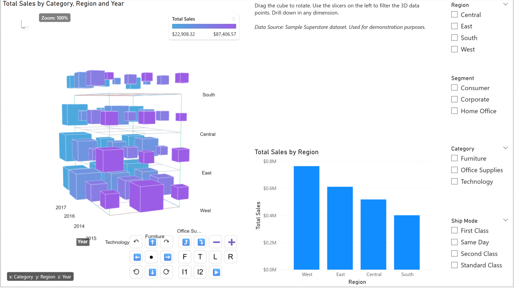

CA Rathinagiri · Power BI
Learn Power BI by watching it think
Chartered Accountant, FinTech Professional, and Educator sharing open-source custom visuals and animated infographics to demystify complex Power BI concepts.
- 23interactive lessons
- 4open-source tools
- 4case studies
Learning path · 23 lessons
Animated Infographics & Labs
Each lesson turns one Power BI idea into an interactive analogy. Follow them in order, or jump to any topic. Every page has Previous / Next buttons and a light/dark switch.
Foundations
What data is, how it is processed and analysed, and why it is shaped this way.
Power Query
Combine and shape data before it reaches the model.
Data Modeling
How a model gives data meaning, how it runs, and how filters travel.
DAX
Evaluation contexts, iterators and filter control.
Visualization
Turn the numbers into the right picture.
Open source
Custom Visuals Gallery
Explore my open-source custom visuals designed to extend Power BI's capabilities.

Bar Racing Image
A Microsoft Store-approved Power BI custom visual for animated bar racing charts with optional category images. It supports category, measure, play-axis animation, embedded image URIs, tooltips, controls, and context menus.

FlowTank
A Microsoft AppSource-approved Power BI custom visual for comparing inflows, outflows, source/application of funds, and net balance in a tank-style business view. It supports Direction-based classification, native Power BI tooltips, cross-filtering, configurable labels, and formatting options.

DataCube 3D
An interactive, open-source 3D visual for Power BI that helps users visualize multidimensional data. Explore Data Cube operations—Pivoting, Dicing, Slicing, Drilling Down, and Rolling up—through dynamic 3D cube animations.

Power BI Theme Maker
A single-file HTML application for generating, customizing, and validating Power BI JSON themes. Visually design themes, preview them in real-time, and export the resulting JSON configuration for direct import into Power BI.
Practice
Power Query
Explore exercises and mind maps to master data transformation with Power Query.
Power Query Exercises
Practice data shaping and transformation with a set of Power Query exercises along with sample data in Excel.
Time Intelligence Mind Map
A comprehensive mind map detailing Time Intelligence functions and concepts in Power BI.
Hands-on
Tutorials & Case Studies
Hands-on case studies and real-world scenarios to elevate your Power BI data modeling and analytics skills.
Power BI Case Study 01
A comprehensive data analysis case study covering modeling, DAX, and report creation.
Power BI Case Study 02
An advanced case study focusing on complex scenarios and in-depth data transformation.
Case Study 01 (Purchase Data)
A focused case study applying analytics to real-world purchasing data records.
Case Study 02 (Form 26AS)
Practical real-world examples reconciling and analyzing Form 26AS tax statements.
Case Study Source Data
Download the source data required to complete the exercises in Power BI Case Studies 1 & 2.
Power BI Practice Workbook
Download the companion Power BI workbook to experiment with the scenarios covered in these visuals.
Download PBI.xlsx ↓